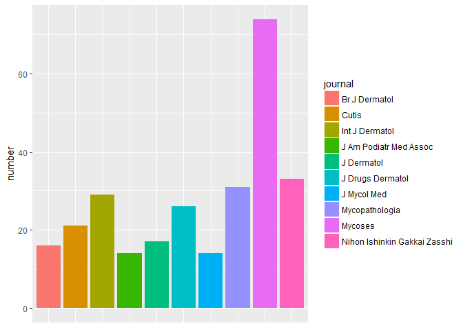
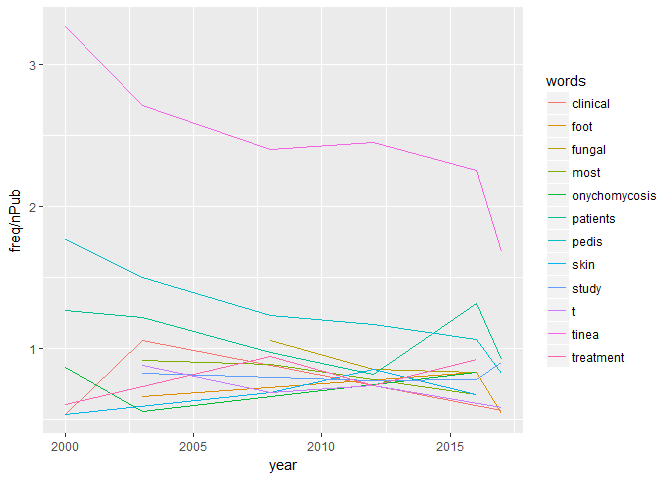
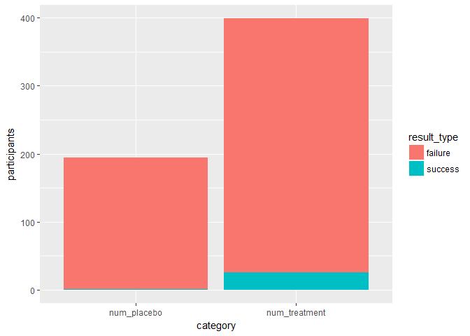

Hi athletes, today we will be looking at data about a health issue that affects many athletes: athlete’s foot. It’s not a very glamorous subject but it’s still interesting, and I find fungi really fascinating, they are warrior eukaryotes that survive everywhere! Most of you probably would rather never hear about it… but you should. For those who don’t know, it is generally a fungal infection on the feet referred to as “tinea pedis” but can be something else that causes inflammation on the foot of an athlete, however the definitions vary according to who you talk to… I am going to stick to the more accepted definition which is the fungal infection. It can happen to all kinds of different athletes in various sports: tennis, running, martial arts, swimming… The reason it appears on feet very often is because it is a hot and humid region of the body where our sweat gets trapped, creating the perfect environment for fungi. The infection can persist for years if not treated, can be reoccuring and is often misdiagnosed. It is also easy to mistake for something else and athletes won’t notice until it gets pretty bad. This article stated in 2012 that about 15% of the world population could be affected which is a little scary to be honest… So that’s one reason to be mindful of our hygiene when we work out! Since I don’t know too much about it, I decided to look a bit more at what reasearchers can tell us about it.
I am going to scrape the pubmed database first as I did in this post about triathlon. Then I am going to look a bit closer at the medication that we can use to treat it, see how it works from a biological point of view and look at a clinical trial of one of the most common topical treatments prescribed.
Pubmed database article scraping
Sending the query
The API I am using with the RISmed package sends a query to Pubmed depending on the criteria you want. Those include start and finish date, date type, type of search, and subject.
Number of publications mentioning “athlete’s foot” from 2000-2017
There are 855 articles that have been published about athlete’s foot on the pubmed database total since the year 2000, which is more than I expected. The standard deviation for the number of articles published in successive years is 5.9160798 which is not very much variation compared to other subjects I’ve searched for recently. The plot showing the evolution of the number of publications is below:

It started off at very few publications, only 30 in the year 2000 then became a little more popular until 2003 when it decreased. Apparently scientists took interest in it a bit more after 2010 and it’s been somewhat stable since with its highest at 64 in 2016. It’s not a crazy popular subject on pubmed, probably because it’s not a subject that gets financed a lot, which makes sense. That’ll be the takeaway for this part.
Most publishing journals on the subject
Here are the top 10 most publishing journals:

The journals that publish most are the ones on dermatology. There are also some specifically on fungal infections with at the very top Mycoses, a german journal that started in the 50s.
Top authors diversity and specialty
I wanted to see if there is a big variety of authors writing on the subject so I pulled them up. There are 2894 different authors with the most publishing author having done 23. The mean number of articles published by an author on the subject is 1.2753974 so most authors have published only one article on the subject, which makes sense, they are probably usually publishing on other fungal infections or skin diseases.
Most used words in abstracts over the years and in titles
We are now going to look at the 10 most used words in abstracts over the years in the table below in different years:
| year | words | freq | nPub | year | words | freq | nPub |
|---|---|---|---|---|---|---|---|
| 2000 | tinea | 98 | 30 | 2017 | tinea | 84 | 50 |
| 2000 | pedis | 53 | 30 | 2017 | patients | 46 | 50 |
| 2000 | patients | 38 | 30 | 2017 | study | 45 | 50 |
| 2000 | trichophyton | 32 | 30 | 2017 | pedis | 41 | 50 |
| 2000 | onychomycosis | 26 | 30 | 2017 | rate | 32 | 50 |
| 2000 | treatment | 18 | 30 | 2017 | t | 29 | 50 |
| 2000 | clinical | 16 | 30 | 2017 | clinical | 28 | 50 |
| 2000 | skin | 16 | 30 | 2017 | athletes | 27 | 50 |
| 2000 | after | 15 | 30 | 2017 | foot | 27 | 50 |
| 2000 | prevalence | 15 | 30 | 2017 | nfl | 25 | 50 |
A lot of the top words have remained the same throughout the years! The first thing to notice is tinea is the top word, so it is the fungal infection that is most studied on the subject of athelte’s foot. A couple other words that are dissimilar attract my attention: in 2000 we had “prevalence”, so they focused on what science can teach us to prevent it from happening together, but not as much as “treatment” which is mentioned more. We also have “onychomycosis” which is tinea unguium and “Trichophyton” which is the name of the genus which contains the tinea fungus. This explains why tinea and pedis were not mentioned at the same frequency, because there are several types of tinea infections. This is because it happens that when the foot is infected, the hands can also be affected, as well as other areas of the body. In 2017 the interesting word is “nfl”, national football league”, which is American football. This shows that this sport is the one for which the subject sparked the interest of scientists.
Let’s see if the use of these top 10 words evolved over time in this next plot (frequency normalized by number of articles published each year):

Most of the words are not changing in their frequency of use, they are right at or below 1 mention per article. Then there is tinea which is being mentioned less and less throughout the years.
WordCloud of the most common words
The wordcloud is one of my favorite figures to generate with R and I frequently generate them for my amused colleagues at work (bless them, they think I’m a little crazy). It is a certain subject in a nutshell, really so I think they are quite useful!

Fungi, bacteria, shoes?
I wanted to see in which context more precisely athlete’s foot articles are published, so I’m checking for specifically certain words in the title:
Let’s look at the number of titles with certain keywords in them:
| // | total | fungi | bacteria | shoes |
|---|---|---|---|---|
| number of articles | 853 | 138 | 57 | 28 |
Medication for athlete’s foot
Some of the most common tinea pedis fungi are trichophyton, microsporum and epidermophyla according to this website and with a quick search on Pubmed’s taxonomy search, I found that they are Arthrodermataceae. There are many different options that treat athlete’s foot, usually topical creams, and oral treatments. This clinical trial article states that there are 3 topical treatments that are used:
tavaborole
efinaconazole
ciclopirox
Understanding the tavaboroles’ action and possible adverse effects
As a biologist, I always look up clinical trials on the medication I’ve been prescribed, mostly because I have very little trust in most french doctors, or at least most french general practicioners, and I have good reason to, I’ve had classes with them and I’ve worked with them. I also check how these chemicals actually work. If you wanted to know how to do that as well, let’s take the example of tavaborole.
The clinical trial I mentioned in the section above is about tavaborole. What you look for in this study is the number of people involved (treated and control), and whether it is randowmized, blind, or double blind (neither patient nor doctor know who has the treatment and who has the placebo). A clinical trial protocol can become very complicated depending on what the product tested, but for medication like a pill or cream it is fairly straightforward. Check the primary and secondary goals, because they are not always the same from study to study. Clinical trials have different purposes: getting rid of symptoms, a prevention of worsening of a condition, a lack of adversary effects… Here the primary goal is “completely cure the nail infection”. They explain that this means no visible fungi. In the secondary goals you also have “negative fungal culture”. Then you can look at the results of the study which show here a clear difference between the treatment and the placebo, but I am still surprised at the number of failures with the actual treatment:

I think it’s possible that they didn’t work on all infections because the species of fungi must have been very different and maybe some aren’t sensitive to this particular treatment because they have a variant of the protein that is too different.
What is also important to look at is also the statistical method they used to determine whether there is an effect or not. Here they used the Cochran-Mantel-Haenszel method for a test of superiority, which is very typical for this kind of study.
I also wanted to know how the medication works biologically speaking. I did a quick search on wikipedia and found that it inhibits leucyl-tRNA synthetase, a protein that is important for protein synthesis in the fungi. This protein also exists in humans. If they are really similar and their target exists in both fungi and humans, this could mean that there could be adverse effects. I then went on Pubmed and searched for the human version of the protein. If you scroll down on the page and go down you will find a lot of information about where it is expressed and the expression levels (you will notice it is expressed in the skin for example), as well as much more information. I scrolled down to “protein interaction” and did the same thing for a fungi version of the gene, but there wasn’t as much information unfortunately so I couldn’t compare. By pulling up the DNA sequence I can already tell the proteins are very different. I did a quick alignment and I got no result. I will get more into details for this kind of work in an upcoming article, I want to do it justice.
Lastly, I looked for articles that talk about Tavaborole and found this gem which compares the 3 treatments I quoted above. They found that tavaborole is actually fungistatic in keratin-containing medium, meaning it prevents further growth of fungi. This is incredible! In the presence of keratin, a protein found in nails, tavaborole is actually only fungistatic! This explains the mild results of the clinical study above. I encourage you to read the article which is free, if you’re interested.
As usual, the code in the Rmd file is on my github, link on the left under the “work” tab!
That’s all I’ve got for you today, stay infection-free athletes!
See you soon,
Sciathlete